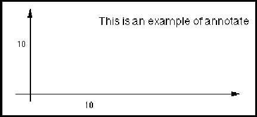

edif
The grammatical goal of an EDIF description is the edif form, optionally surrounded by whiteSpace characters.
Such a file need not be logically complete, since external library declarations may be used. One or more designs may also be partially described, or not fully developed.
A legal EDIF file may be created to communicate a design that contains design errors (such as violations of physical design rules), possibly for verification or correction at another location.
design edifLevel external identifier integerToken keywordMap library nameDef nameRef stringToken whiteSpace
acLoad ::= '(' 'acLoad'
capacitanceValue
')'
instancePortAttributes port portAnnotate
AcLoad is an attribute of a port used to express the external load capacitance of the port. This quantity has units of capacitance, and the scale is determined by setCapacitance. The total capacitance seen at the output port of a gate is the sum of the acLoad values of all connected ports.
Values of acLoad scale between views using the factors defined by setCapacitance.
(acLoad (e 25 -15))
This example specifies a nominal acLoad value of 25 fF, assuming a capacitance scale factor of 1.
acLoadDisplay ::= '(' 'acLoadDisplay'
( addDisplay | replaceDisplay | removeDisplay )
')'
AcLoadDisplay is used to define the display positions for acLoad. When used in the context of any implementation, it may add, replace or remove displays. Within the context of a template definition, only addDisplay may be used.
acLoadFactorCapacitance ::= capacitanceValue
AcLoadFactorCapacitance specifies the number of capacitance units for which the acLoadFactorTime is appropriate. This is typically equal to one. Its units are as defined by setCapacitance.
acLoadFactorTime ::= timeValue
AcLoadFactorTime is the time delay for a capacitance load given by acLoadFactorCapacitance. Its units are as defined by setTime.
addDisplay ::= '(' 'addDisplay'
{ display }
')'
acLoadDisplay approvedDateDisplay associatedInterconnectNameDisplay cellPropertyDisplayOverride checkDateDisplay clusterPropertyDisplayOverride companyNameDisplay contractDisplay copyrightDisplay dcFanInLoadDisplay dcFanOutLoadDisplay dcMaxFanInDisplay dcMaxFanOutDisplay designatorDisplay displayNameOverride drawingDescriptionDisplay drawingIdentificationDisplay drawingSizeDisplay engineeringDateDisplay instanceWidthDisplay originalDrawingDateDisplay pageIdentificationDisplay pageTitleDisplay portPropertyDisplayOverride propertyDisplayOverride revisionDisplay totalPagesDisplay
AddDisplay is used to provide additional display positions for an attribute that is to be displayed. In the context of an implementation of a template, it adds to, and does not replace, any display positions provided by the template.
(schematicGlobalPortTemplate GROUND_SYMBOL
(schematicTemplateHeader
(schematicUnits ...)
(property GPTP ...) ...)
(hotspot (pt 0 0))
(figure LINES ...)
(propertyDisplay GPTP
(display TEXT
(transform (origin (pt 100 200)))))
)
...
(cell Top_level_schematic (cellHeader ...)
(cluster C1
(interface ...)
(clusterHeader ...)
(schematicView schematic_sheet
(schematicViewHeader ...)
(logicalConnectivity
...
(signal N1
(signalJoined
(globalPortRef ...) ...) ...))
(schematicImplementation
(page &1 (pageHeader ...)
(schematicGlobalPortImplementation &1
(schematicGlobalPortTemplateRef
GROUND_SYMBOL)
(globalPortRef ...)
(transform (origin (pt 1000 1000)))
(propertyDisplayOverride GPTP
(addDisplay
(display TEXT
(transform
(origin (pt 1300 1400)))))))
)))))
In this example, the property GPTP belonging to the global port template GROUND_SYMBOL will be displayed at (pt 1300 1400) in the page, as well as at (pt 1100 1200) which is (pt 100 200) transformed to the origin of the template in the page, (pt 1000 1000).
'A' | 'B' | 'C' | 'D' | 'E' | 'F' | 'G' | 'H' | 'I' | 'J' | 'K' | 'L' | 'M' | 'N' | 'O' | 'P' | 'Q' | 'R' | 'S' | 'T' | 'U' | 'V' | 'W' | 'X' | 'Y' | 'Z' | 'a' | 'b' | 'c' | 'd' | 'e' | 'f' | 'g' | 'h' | 'i' | 'j' | 'k' | 'l' | 'm' | 'n' | 'o' | 'p' | 'q' | 'r' | 's' | 't' | 'u' | 'v' | 'w' | 'x' | 'y' | 'z'
Alpha is a character of the set A..Z or a..z which is used within string tokens and identifiers. Case is significant within string tokens, but not in identifiers.
netA neta "a string" "A string"
In this example, the two identifiers netA and neta are equivalent, but the two string tokens are distinct.
digit specialCharacter encodedCharacter
ampere ::= '(' 'ampere'
unitExponent
')'
Ampere is used to specify a user-defined unit in terms of the SI current unit, ampere. See unit for examples of the definition of units.
angleValue ::= numberValue
A numberValue representing an angle in units specified by setAngle.
annotate ::= '(' 'annotate'
stringValue
{ display }
')'
commentGraphics diagram interconnectAttachedText pageBorderTemplate pageCommentGraphics pageTitleBlockTemplate schematicFigureMacro schematicGlobalPortTemplate schematicMasterPortTemplate schematicOffPageConnectorTemplate schematicOnPageConnectorTemplate schematicRipperTemplate schematicSymbol schematicSymbolBorderTemplate schematicSymbolPortTemplate
Annotate is used for associating comment text with an object. The string value has an association with the object which contains it. The string has no interpretation, and is equivalent to a comment in a programming language.
The string can be displayed using display to define the location and system attributes necessary to display the string value. If no display is present, then the display positions are undefined.
In this example, the string "This is an example of annotate" will be displayed at (pt 12 13), according to the display attributes associated with the figureGroup named textDisplay.
(commentGraphics
(annotate
"This is an example of annotate"
(display textDisplay
(transform (origin (pt 12 13))))))
The annotation text is shown in the figure below.

approvedDate ::= '(' 'approvedDate'
date
')'
The date of the approval of the revision by an authorized person.
(approvedDate (date 1991 10 9))
This example shows that the drawing was approved on October 9th 1991.
approvedDateDisplay companyName contract originalDrawingDate drawingDescription drawingIdentification drawingSize engineeringDate pageIdentification revision pageTitle
approvedDateDisplay ::= '(' 'approvedDateDisplay'
( addDisplay | replaceDisplay | removeDisplay )
')'
pageTitleBlockAttributeDisplay
ApprovedDateDisplay is used to define the display positions for approvedDate. When used in the context of pageTitleBlock, it may add, replace or remove displays. Within the context of a template definition, only addDisplay may be used.
arc ::= '(' 'arc'
startPoint
throughPoint
endPoint
')'
Arc is used to describe shapes with curved edges. The arc described is circular. StartPoint is the starting point of the arc, throughPoint is any point on the arc (not necessarily the mid point)and endPoint is the end point of the arc.
The three points of the arc specification must be distinct and must not lie on a straight line.
ThroughPoint is specified as a numberPoint, i.e. using scaled integer coordinates for increased accuracy. It is acknowledged that it is still not always possible to represent all arcs precisely.
(shape
(curve
(pt 20 100)
(arc
(pt 40 100)
(numberPoint 50 110)
(pt 40 120))
(pt 20 120)))
This shape contains a curved figure which is constructed using arc. The complete shape constructed is as shown in the following figure.
(shape
(curve
(pt 20 100)
(arc
(pt 40 100)
(numberPoint (e 499 -1) (e 1102 -1))
(pt 40 120))
(pt 20 120)))
The second example uses scaled integers for the intermediate point on the arc.
ascii ::= '(' 'ascii'
')'
Ascii indicates that character encoding within strings is in ASCII. All values within '%' (see stringToken) should therefore lie between 0 and 127 inclusive.
associatedInterconnectNameDisplay ::= '(' 'associatedInterconnectNameDisplay'
( addDisplay | replaceDisplay | removeDisplay )
')'
schematicOffPageConnectorImplementation schematicOffPageConnectorTemplate schematicOnPageConnectorImplementation schematicOnPageConnectorTemplate
AssociatedInterconnectNameDisplay provides display locations for an interconnect that is associated with an on-page connector or off-page connector. This may be defined within the template and/or within the implementation of the connector. The associated interconnect is the interconnect that references the given on-page or off-page connector.
(page &1 ...
(schematicOnPageConnectorImplementation
I1
(schematicOnPageConnectorTemplateRef ... )
(transform (origin (pt 100 200)))
(associatedInterconnectNameDisplay
(addDisplay ...)))
...
(schematicNet NET1
(signalRef SIG1)
(schematicInterconnectHeader ...)
(schematicNetJoined
(joinedAsSignal)
(schematicOnPageConnectorImplementationRef
I1) ...) ...) ...)
In this example, a schematicOnPageConnectorImplementation named I1 is referenced from the schematicNet NET1. Therefore the associated interconnect is the net NET1, and the name of this net would be displayed.
attachmentPoint ::= pointValue
AttachmentPoint is the attachment point for a string of text onto the implementation of an interconnect, i.e. schematicNet, schematicBus, schematicBusSlice, schematicSubBus or schematicSubNet. The attachment point must correspond to a point specified as part of the graphics within the interconnect. It will typically be a vertex of a path.
(interconnectAttachedText (pt 200 300) (annotate "Unfinished net" (display ...)))
In this example, the annotation text is displayed at a position given within the display form, but is attached to the interconnect at the point (pt 200 300). The point must be part of the interconnect graphics, so (pt 200 300) must also appear somewhere within the corresponding implementation.
author ::= '(' 'author'
stringToken
')'
Author is used to identify the person or organization responsible for writing the information. This field is often used to identify ownership of the design, or to identify a contact for more information about the design.
(written (timeStamp (date 1987 3 4) (time 12 34 54)) (author "Kiki") (program "EDIF_$Net" (Version "5.3")))
The above example specifies that the block of information was produced on March 4, 1987 at 12:34:54 UTC by the program named EDIF_$Net version 5.3, and that the person named Kiki is responsible for the creation or modification of the data.
dataOrigin program status timeStamp version written
backgroundColor ::= '(' 'backgroundColor'
color
')'
documentationHeader geometryMacroHeader libraryHeader pageHeader schematicSymbolHeader schematicTemplateHeader
BackgroundColor is used to define the background color applicable to a displayed object. The default background color is white.
(backgroundColor (color 100 0 0))
This example defines a background color of red.
baselineJustify ::= '(' 'baselineJustify'
')'
BaselineJustify indicates that the Y origin point of the text is at the baseline of the bottom line of text. See verticalJustification for more details.
becomes ::= '(' 'becomes'
( logicNameRef | logicList | logicOneOf )
')'
event interconnectDelay portDelay portDelayOverride portLoadDelay portLoadDelayOverride
Becomes is used to describe a logic state transition from any value to the given logic value.
LogicList is used in conjunction with port lists or port bundles. When specified, the size of the logic list must match the size of the port list or port bundle.
LogicOneOf is used to provide a choice of logic values or logic lists. Any match in the logicOneOf is considered a match in the becomes statement.
(becomes L)
The first example specifies any transition to the logic value L.
(becomes (logicOneOf H L))
The second example specifies any transition to either the logic value H or to the logic value L.
logicList logicOneOf pathDelay transition
behaviorView ::= '(' 'behaviorView'
viewNameDef
{ comment | <nameInformation> | userData }
')'
BehaviorView is used to describe the behavior of a cell. This view is not complete in this version of EDIF, and is likely to be extended to reference some external standard description of the behavior.
connectivityView logicModelView maskLayoutView pcbLayoutView schematicView symbolicLayoutView
bidirectional ::= '(' 'bidirectional'
')'
Bidirectional is used to indicate that a port template is to be used for ports with type bidirectional.
(schematicSymbolPortTemplate INOUT_PORT (schematicTemplateHeader ...) (hotspot ...) (bidirectional) ...)
This example shows a schematicSymbolPortTemplate to be used for bidirectional ports.
input output unspecified unrestricted mixedDirection
bidirectionalPort ::= '(' 'bidirectionalPort'
{ <bidirectionalPortAttributes> }
')'
BidirectionalPort defines the attributes, if any, for a bidirectional port.
(port X
(bidirectionalPort
(bidirectionalPortAttributes
(dcFanOutLoad ...))))
This example shows that the port X is a bidirectional port with a given dcFanOutLoad.
inputPort outputPort unspecifiedDirectionPort
bidirectionalPortAttributes ::= '(' 'bidirectionalPortAttributes'
{ <dcFanInLoad> | <dcFanOutLoad> | <dcMaxFanIn> |
<dcMaxFanOut> }
')'
bidirectionalPort directionalPortAttributeOverride
BidirectionalPortAttributes gathers together attributes appropriate to a bidirectional port.
(directionalPortAttributeOverride
(bidirectionalPortAttributes
(dcFanInLoad ...)))
bitOrder ::= '(' 'bitOrder'
( lsbToMsb | msbToLsb )
')'
BitOrder is used to indicate when the indices of nameDimension are associated with bits, and whether the bit ordering is from lsb to msb or msb to lsb.
(nameInformation
(primaryName "a[0:3]"
(nameStructure
(complexName "a"
(nameDimension
(nameDimensionStructure
(sequence 0 3))
(bitOrder (lsbToMsb)))))))
Here, the one-dimensional object "a" is specified to be a four-bit object with bit 0 being the least-significant bit and bit 3 being the most-significant bit.
complementedName complexName integerValue sequence simpleName
blue ::= scaledInteger
Blue represents the percentage of blue in the color definition. Its value must lie between 0 and 100 inclusive.
boldStyle ::= '(' 'boldStyle'
')'
BoldStyle indicates that the font uses bold typeface. This information may be used to access a particular typeface within a font family.
(font f1
(typeface "Times"
(typefaceSuffix "-Bold-R-Normal"))
(fontProportions
(fontHeight 100) ...)
(boldStyle) ...)
boolean ::= '(' 'boolean'
booleanValue
')'
Boolean provides a boolean value.
(property checked (boolean (true)))
booleanMap ::= '(' 'booleanMap'
booleanValue
')'
BooleanMap is an attribute of a logic value which declares whether the logic value is associated with boolean values of true or false. Not all logic values will correspond to boolean values.
(logicDefinitions ... (logicValue T (booleanMap (true))) (logicValue WT (booleanMap (true))) (logicValue F (booleanMap (false))) (logicValue WF (booleanMap (false))) (logicValue X))
In the above example, the logic values T and WT correspond to true. The logic value F and WF correspond to false. The logic value X does not correspond to any boolean value.
booleanToken ::= ( false | true )
booleanValue clusterConfigurationNameCaseSensitive clusterNameCaseSensitive designHierarchyNameCaseSensitive designNameCaseSensitive documentationNameCaseSensitive figureGroupNameCaseSensitive globalPortNameCaseSensitive hotspotNameCaseSensitive implementationNameCaseSensitive instanceNameCaseSensitive interconnectNameCaseSensitive libraryNameCaseSensitive libraryObjectNameCaseSensitive localPortGroupNameCaseSensitive pageNameCaseSensitive pixelRow portNameCaseSensitive propertyNameCaseSensitive signalGroupNameCaseSensitive signalNameCaseSensitive viewGroupNameCaseSensitive viewNameCaseSensitive
A token indicating boolean TRUE or FALSE.
(property checked (boolean (true)))